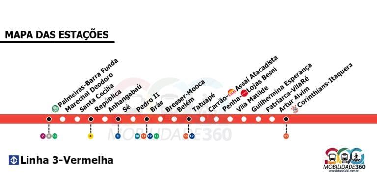

Opções de Transporte
O Estádio do Palmeiras é facilmente acessível por transporte público. As opções incluem:
- Metrô: A estação mais próxima é a Palmeiras-Barra Funda, que fica a cerca de 15 minutos a pé do estádio.
- Ônibus: Para chegar ao Allianz Parque, você pode usar as seguintes linhas de ônibus:
- Linha 8548-10: Praça do Correio
- Linha 877T-10: Vila Anastácio
- Linha 8696-10: Jaraguá
- Linha 129F-10
- Linha 178A-10
- Linha 209P-10
- Linha 331
- Linha 8000-1
- Linha 8400-10
- Linha 8549-10
- Linha 8615-10
- Linha 877T-10
- Linha 948A-10.
- Carro: Se você estiver dirigindo, o estádio possui estacionamento pago nas proximidades. Recomendamos chegar com antecedência para garantir uma vaga.

Localização
O Estádio do Palmeiras está localizado na Avenida Palestra Itália, 213, São Paulo - SP. Utilize um aplicativo de mapas para obter direções precisas a partir de sua localização.